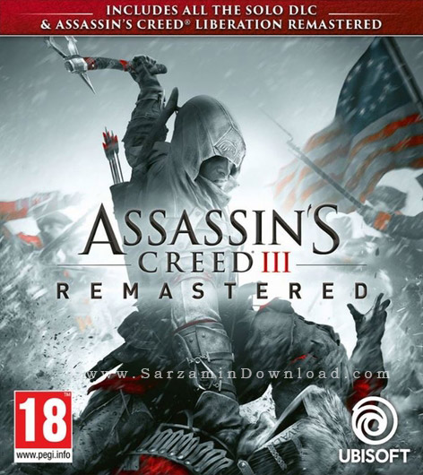
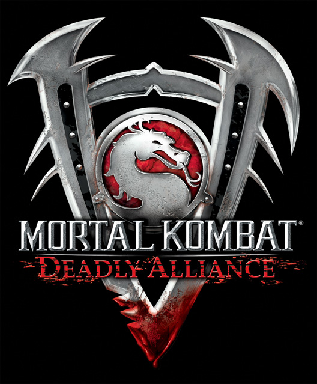
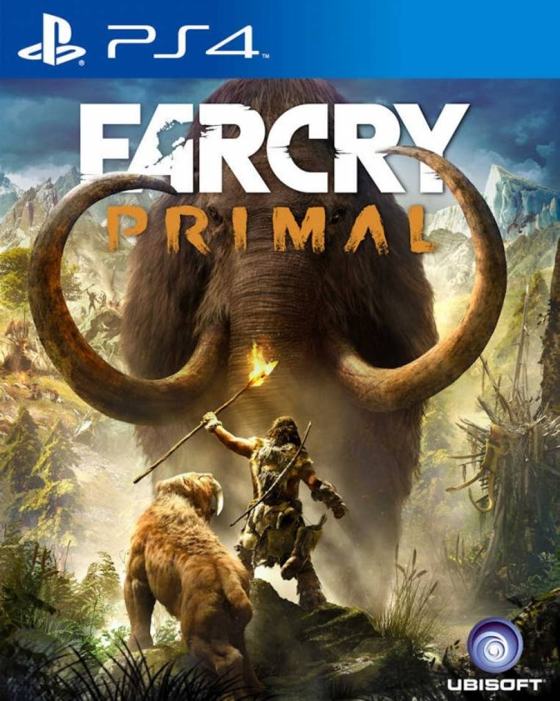

top 10 game (My Opponion)

داستان بازی :
بازیکن در طول بازی نقش سه شخصیت را بازی می کند. شخصیت اصلی دزموند مایلز ، یک قاتل قرن بیست و یکم است که در تلاش است تا پرده از رازهای یک طاق مرموز پرنسور بگذارد که در 21 دسامبر 2012 از زمین در برابر شعله های خورشیدی آینده محافظت می کند.
برسی بازی :
Assassins Creed III یک بازی عالی است که در بازی Assassins Creed Games گسترش یافته است. Assassins Creed IIIs Graphics دقیق و بی عیب و نقص است ، گیم پلی بازی تازه و جدید است که دقیقاً همان چیزی است که سریال در این مقطع مورد نیاز است ، تعداد سلاح های مختلف بسیار خوبی وجود دارد که عالی است ، نقشه و مناطق بازی بسیار باورنکردنی و واقعاً ضبط شده است. احساس و جو شهرها و مرزها.

بازی Mortal Kombat 11 دقیقا همان تجربه مبارزهای خشن، خونین، پر از تکهتکهشدن شخصیتها یا Fatalityهای وحشتناک است و در چنین مواردی استودیو ندررلم حتی یک قدم رو به عقب هم برنداشته و حتی برعکس، بازی را بیش از پیش تبدیل به اثری خشن و جدی کرده است که قطعا برای طرفداران همیشگی مجموعه خوشایند و برای آنهایی هم که با چنین جنبههایی از مورتال کامبت مشکل داشتند آزاردهنده خواهد بود. یکی از بخشهایی که بازی در آن از موفقیتهای Injustice 2 الهام گرفته، همین بخش داستانی است و به همین سبب شاهد روایتی هستیم که بیش از همیشه سینمایی شده است و برای مثال نحوه انتقال بازی از میانپردهها به مبارزات حالتی کاملا سینمایی بهخود گرفته و از همیشه جذابتر است. بهعنوان بخش داستانی یک بازی مبارزهای، این قسمت در مورتال کامبت ۱۱ قابل قبول و کار راهانداز است.
کلیت داستان بازی Mortal Kombat 11 حول محور ایده دستکاری زمان میچرخد. به بیان دقیقتر، داستان از جایی آغاز میشود که شخصیت شیناک شکست خورده و ریدن در حال شکنجه کردن وی است. با اینکه همهچیز بر وفق مراد دنیای ایرثرلم بهنظر میرسد، اما پس از ظاهر شدن کرونیکا، شخصیت منفی جدید بازی، متوجه میشویم که از این خبرها نیست و وی همهچیز را تحت کنترل دارد. قدرت اصلی کرونیکا، دستکاری زمان است و خب سازندگان از این ایده استفاده کرده و مخصوصا در دقایق ابتدایی بازی تقابلهای جذابی رقم زدهاند. برای مثال مشاهده مبارزه دو جانی کیج با یکدیگر که از بعدهای زمانی متفاوتی هستند یا تماشای تقابل دو جکس باهم که حضور در بازههای زمانی مختلف آنها را تبدیل به افرادی با خصوصیات متفاوت کرده است، جالب است و ایده خوبی هم بهنظر میرسد.

پنجمین قسمت از سری بازی های اکشن بسیار محبوب GTA که توسط Rockstar North با همکاری Take-Two Interactive ساخته شده است. GTA V در شهری خیالی در لس سانتوس (بر اساس لس آنجلس) اتفاق می افتد. جی تی ای وی قسمت دیگری از یکی از محبوب ترین مجموعه های تاریخ بازی های ویدیویی است. این بازی ابتدا بر روی ایکس باکس 360 و پلی استیشن 3 در سال 2013 منتشر شد. نسخه رایانه این بازی نسخه توسعه یافته و بهبود یافته عنوان اصلی است. زیرا پشتیبانی کامل از وضوح صفحه نمایش بالا و کیفت بیشتر بافتها و مدل های سه بعدی را ارائه میدهد. دنیای بازی به لطف افزایش تعداد خودروها در ترافیک و عابران پیاده زنده تر شده است. سیستم روشنایی، آسیب های خودرو و آب و هوا نیز بهبود یافته است. همچنین ماموریت های جدید، سلاح ها، وسایل نقلیه و گزینه های شخصی سازی شخصیت ها نیز وجود دارد.
Grand Theft Auto V سه شخصیت کاملاً متفاوت را به شما ارائه می دهد:
مایکل: یک سارق سابق بانک از ساحل شرقی، که اکنون تحت برنامه حفاظت از شاهدان است.
ترور: خلبان نظامی بازنشسته که از اختلالات روانی رنج می برد.
فرانکلین: مرد جوانی از محله یهودی نشین، در حال جمع آوری اتومبیل از بدهکاران یک فروشنده محلی ارمنی می باشد.
هر یک از آنها نشان دهنده پس زمینه های اجتماعی دیگری بوده که در بازی به روشی دقیق ارائه شده است. خط داستان و گیم پلی امکان جابجایی بین این سه شخصیت را در هر زمان فراهم می کند، بنابراین می توانید به سرعت دنیای لوس سانتوس را کشف کنید و همیشه در مرکز اتفاقات و حوادث اکشن باشید.
کلان شهر اصلی GTA V لس سانتوس شامل محیط های متنوعی مانند کوه ها، بیابان ها، صخره ها، مزارع، دره ها، پایگاه های نظامی و حتی منطقه ساحلی شهر با دره های زیردریایی و صخره های مرجانی می باشد. که از بزرگترین مناطق جهانی دنیای بازی هستند که توسط Rockstar North طراحی شده است. این نتیجه سفرهای بی شماری است که با داده های آماری در مورد جمعیت کالیفرنیا مخلوط شده است. بنابراین، تقریباً هر عنصر شهر بسیار طبیعی به نظر می رسد، از الگوهای رفتاری افراد پیاده گرفته تا محبوب ترین وسایل نقلیه موجود در خیابان ها و سیستم مدیریت ترافیک به خوبی شبیه سازی شده اند.
کاوش در جهان ارائه شده در GTA 5 با بازیهای کوچک (تنیس، یوگا، گلف و غیره) همراه است، اما هسته اصلی مأموریت هایی هستند که در طی آن یک، دو یا حتی سه شخصیت را کنترل میکنید. معمولاً، مأموریتهای شما بر سرقت از یک بانک یا مغازه متمرکز میشوند، اما مأموریتهای تصادفی نیز در مکانهای مختلف انجام میشوند. برخی از آنها با دوستان شخصیت ها یا اعضای خانواده آنها ارتباط دارند، بنابراین داستان های شخصی آنها را بررسی می کنند. مایکل باید با همسرش آماندا و فرزندانش (تریسی و جیمی) مشکلات خانوادگی را حل کند، ترور با رون که تئوریهای توطئه را همه جا میبیند سرگردان است، در حالی که فرانکلین باید با دوستان دیوانهاش مثل لامار برخورد کند.
سازندگان، وسایل نقلیه متعددی را به شما پیشنهاد می کنند، از دوچرخه گرفته تا اسکوترهای آبی، هواپیما و هلیکوپتر که می توانید از آنها استفاده کنید. مکانیسم رانندگی ماشین بهبود یافته است و اکنون شبیه به مواردی است که در بازی های مسابقه ای یافت می شود. همچنین فروشگاه های زنجیره ای سلاح در بازی وجود دارد که میتوانید اسلحه های مورد نیاز خود را با جمع آوری پول بخرید. حتی با جمع آوری پول میتوانید آن را برای انواع تجهیزات، لباس و ماشین و املاک خرج کنید. یک پیشرفت جالب در سیستم اقتصادی، بازار سهام است که حتی در چندین ماموریت داستانی نیز حضور دارد.
وقتی صحبت از لایه سمعی و بصری به میان می آید، بازی یک موسیقی متن پویا را ارائه می دهد که کاملاً با سرعت رویدادهای روی صفحه نمایش سازگار است. گرافیک بر اساس نسخه اصلاح شده موتور ایجاد شده توسط Rockstar Games، یعنی RAGE (Rockstar Advanced Game Engine) است. این امکان رندر کردن مناطق بزرگی از دنیای بازی را فراهم می کند و دارای سیستم پیشرفته سایه زنی و شبیه سازی نور است.
اتومبیل دزدی بزرگ وی شبکه بازی گسترده ای به نام GTA Online را ارائه می دهد. در حالت چند نفره، بازیکنان شخصیت های خود را خلق میکنند و با انجام ماموریت ها یا چالشهای جزئی، جنگهای گروهی، مسابقه یا چتربازی، آنها را ارتقا میدهند. 16 نفر می توانند در یک جلسه بازی در یک جهان شرکت کنند. بازیکنان می توانند با یکدیگر مبارزه کنند، حملات را سازماندهی کنند یا وظایف مختلفی را انجام دهند (این رویدادها برای 2-10 نفر است).

بازی The Last of Us Part I که در ابتدا برای پلی استیشن در سال 2013 منتشر شد، یک بازی اکشن ماجراجویی بقا است که توسط Naughty Dog توسعه یافته و توسط Sony Computer Entertainment منتشر شده است. این بازی هم اکنون با گرافیک و ویژگی های گیم پلی بهبود یافته برای رایانه های شخصی منتشر شده است. The Last of Us Part I داستان جوئل و الی، دو بازمانده در دنیایی پسا آخرالزمانی را دنبال می کند که توسط یک عفونت قارچی مرگبار که بیشتر بشریت را به موجودات ترسناک و زامبی مانند معروف به Infected تبدیل کرده است.
داستان The Last of Us Part I یک داستان قدرتمند و احساسی از بقا، از دست دادن و رستگاری است. داستان بازی در سال 2033 اتفاق میافتد، بیست سال پس از آن که یک عفونت قارچی جهان را ویران کرد و بشریت را در آستانه انقراض قرار داد. این بازی سفر جوئل، یک قاچاقچی را دنبال می کند که وظیفه دارد الی، دختر جوانی را که ممکن است کلید درمان را در دست داشته باشد، در سراسر کشور تا گروهی از دانشمندان که ممکن است بتوانند درمانی برای عفونت ایجاد کنند، همراهی کند. داستان پر از شخصیت های به یاد ماندنی، پیچش های غیرمنتظره و لحظات دلخراشی است که بازیکنان را از نظر احساسی روی جهان و شخصیت های آن سرمایه گذاری می کند.
The Last of Us Part I دارای ترکیبی از گیم پلی اکشن، مخفی کاری و بقا است که تجربه ای پرتنش و فراگیر را ایجاد می کند. بازیکنان باید برای یافتن منابع، سلاحها و تجهیزات را بگردند و در محیطهای خطرناک مملو از افراد آلوده و سایر بازماندگان حرکت کنند. این بازی دارای یک سیستم مبارزه مبتنی بر پوشش است که به بازیکنان اجازه میدهد در جنگهای آتشسوزی شدید شرکت کنند یا از مخفی کاری استفاده کنند تا از رویارویی به طور کلی جلوگیری کنند. این بازی همچنین دارای یک سیستم کاردستی است که به بازیکنان اجازه میدهد آیتمهایی مانند کوکتل مولوتف، بمبهای ناخن و کیتهای پزشکی بسازند که میتوانند برای کمک به شرایط مبارزه یا بقا استفاده شوند. سختی بازی را میتوان به تناسب بازیکنان با سطوح مهارتی مختلف تنظیم کرد، و در عین حال برای تازهواردها، تجربهای چالشبرانگیز را برای بازیکنان باتجربه ایجاد کرد.
The Last of Us Part I دارای طیف گسترده ای از سلاح ها است که بازیکنان می توانند از آنها برای مقابله با افراد آلوده و سایر بازماندگان استفاده کنند. این بازی دارای هر دو سلاح گرم و غوغا از جمله تپانچه، تفنگ ساچمه ای، تفنگ و کمان است. این بازی همچنین دارای یک سیستم ساخت منحصر به فرد است که به بازیکنان اجازه میدهد سلاحهای خود را ارتقا دهند و پیوستهایی مانند اسکوپ و صدا خفه کن را اضافه کنند. بازیکنان همچنین میتوانند سلاحهای موقتی مانند شیو و بمبهای لولهای بسازند که میتوان از آنها در جنگ استفاده کرد. اسلحه های بازی حس واقعی و سنگینی برای آنها دارند و باعث می شود نبرد شدید و احشایی به نظر برسد.
The Last of Us Part I دارای یک دنیای پسا آخرالزمانی است که به زیبایی ساخته شده است که هم ترسناک و هم فراگیر است. محیطهای بازی بسیار دقیق و پر از رازها و افسانههای پنهان است که بازیکنان میتوانند با کاوش آنها را کشف کنند. این بازی دارای محیط های مختلفی از جمله مناطق شهری، حومه شهر و مناظر روستایی است. هر محیطی چالش ها و موانع منحصر به فرد خود را دارد، مانند ساختمان های در حال فرو ریختن، خیابان های سیل زده و جنگل های بیش از حد رشد کرده است. دنیای بازی واقعاً واقعی و واقعی به نظر می رسد، با بازماندگانی که به دنبال منابع هستند و افراد آلوده در هر گوشه ای در کمین هستند.

نسل جدید از زامبی های پارکور کار را در دنیایی متفاوت به تصویر می کشد. این بازی شما را در یک دنیای آزاد قرار می دهد؛ جایی که باید برای نجات یافتن و بقا تلاش کنید. این تلاش باید در مسیری باشد که نه تنها به شما کمک کند تا خود را نجات دهید بلکه باید برای به دست آوردن منابع مختلف جدید و نیز ساخت اسلحه های جدید اقدام کنید. این سرزمین از یک طاعون و بیماری مسری بسیار عجیب و غریب رنج می برد و این بیماری باعث شده تا افراد بسیار زیادی به زامبی های بسیار خشن تبدیل شوند. تفاوت این زامبی ها با هم نوعان خود بدون شک قدرت انجام حرکات پارکور است و این مسئله آنها را دشمنانی بسیار پر قدرت و سریع تبدیل کرده است. همچنین باید در مواقع تاریکی و شب ها بیشتر مراقب باشید چرا این موجودات قدرت بیشتری دارند و نیز موجودات مختلفی نیز سر از لانه بیرون می آورند تا خود را سیر کنند!
بازی Dying Light Definitive Edition یکی از جذابترین بازی های سبک اکشن است که در آن شما با داستان و گیم پلی بسیار خوبی روبرو می شوید. این بازی نسخه بهبود یافته Dying Light The Following است که پک های الحاقی مختلفی به آن افزوده شده است. پسوند Reinforcements نیز بیانگر یکی از جدیدترین پک های الحاقی این بازی بسیار جذاب است. این بازی توسط شرکت Techland برای پلتفرم ویندوز، مک و لینوکس تولید و عرضه شده است.

Tom Clancys Rainbow Six Vegas بازی جدیدی در سبک اکشن و اول شخص می باشد که در سال 2015 توسط Ubisoft Montreal ساخته و برای کامپیوتر عرضه شده است. Tom Clancys Rainbow Six Siege پلیرها به اینکه استاد خرابکاری شوند تشویق می کند ! درگیری های شدید به صورت نزدیک ، مبارزات مسلحانه با مرگ و میر بالا ، به کارگیری تاکتیک های جنگی به صورت تیمی ، انجام فعالیت های مسلحانه به منظور انفجارهای بزرگ و … از جمله چشم اندازهایی هستند که در جای جای این بازی می توان آنان را مشاهده کرد. این بازی دارای یک گیم پلی نوآورانه در شبیه سازی درگیری های مسلحانه است ، دشمنان شما در حال تغییر سنگرهای جنگی خود هستند که شما به منظور جلوگیری از این فعالیت ، می توانید تله های مختلفی را به کار بگذارید و یا سیستم تدافعی خود را تقویت کنید.
وجود هواپیماهای بدون سرنشین ، تیم های جنگی ، برنامه ریزی های پیش از حمله ، خنثی سازی برنامه های تروریستی دشمنان و … نیز لذت واقع گرایانه ای را به محیط بازی بخشیده اند. گرافیک منحصر به فرد بازی و صحنه های فوق العاده درگیرانه در جای جای محیط این بازی ، لذت خاصی را به پلیر القا می کند. واحدهای مبارزه ای ضد تروریستی ، با دارا بودن پنج تن از مشهورترین این عناوین از سرتاسر دنیا از قبیل واحد SAS بریتانیا ، واحد SWAT آمریکا ، GIGN فرانسه ، GSG9 آلمان و SPETSNAZ روسیه ، اقدامات تروریستی را خنثی ساخته و مسئولیت رسیدگی به جریام تروریستی در شرایط اضطراری را بر عهده می گیرند ، از جمله این موقعیت ها می توان به آزاد سازی گروگان ها ، رسیدگی به مجروحان و … اشاره کرد.

بازی Far Cry Primal – فارکرای پریمال عنوانی در سبک اکشن و بقا می باشد که توسط استودیو بازی سازی Ubisoft ساخته و منتشر شده است. داستان بازی Far Cry Primal به عصر سنگی بازمیگردد که شکارچی ماهری به نام تاکار سعی دارد از قبیله خود دربرابر قبیله های دیگر و حیوانات وحشی مانند ماموت ها و ببرهای دندان خنجری محافظت کند.
داستان بازی فارکرای پریمال از زمانی شروع میشود که تاکار و افراد قبیله اش مخفیانه میان ماموت ها رفته اند و میخواهند شکار کنند که یکباره ببر دندان خنجری سروکله اش پیدا میشود و به افراد قبیله حمله میکند. تاکار پس از حمله ببر دندان خنجری زخمی میشود و به پایین تپه سقوط میکند… شما میتوانید با رام کردن حیوانات وحشی جان خود را در برابر حیوانات دیگر حفظ کنید.

بازی فورزا هورایزن 5 ماجراجویی Horizon در انتظار شما است. مناظر دنیای باز پر جنب و جوش و همیشه در حال تکامل مکزیک را با اقدامات رانندگی سرگرم کننده و بی حد و حصر در صدها خودروی برتر جهان کاوش کنید. ماجراجویی Horizon خود را از امروز شروع کنید و به لیست آرزوهای خود اضافه نمایید. دانلود بازی Forza Horizon 5 یک جهان باز متنوع است.
دنیایی از کنتراست و زیبایی چشمگیر را کاوش کنید. بیابانهای زنده ، جنگلهای سرسبز ، شهرهای تاریخی ، ویرانههای پنهان ، سواحل بکر ، درههای وسیع و آتشفشانی پوشیده از برف را کشف کنید. خود را در یک کمپین عمیق با صدها چالش غوطه ور کنید که به شما برای شرکت در فعالیت هایی که دوست دارید پاداش می دهد. با شخصیت های جدید آشنا شوید و نتایج ماموریت های Horizon Story را انتخاب کنید. دانلود بازی Forza Horizon 5 ماشین سواری یک بازی جهان باز در حال تکامل است.

WWE 2K19 یک بازی ویدئویی ورزشی کشتی کج حرفه ای است که توسط Yuke’s توسعه یافته و توسط 2K Sports منتشر شده است. در 9 اکتبر 2018 در سراسر جهان برای مایکروسافت ویندوز، پلی استیشن 4 و ایکس باکس وان منتشر شد. این بیستمین بازی کلی در سری WWE، ششمین بازی تحت پرچم WWE 2K و جانشین WWE 2K18 است. 2K19 آخرین بازی WWE بود که پس از هجده سال توسط Yuke’s ساخته شد. WWE 2K20 2019 توسط Visual Concepts توسعه خواهد یافت.

در سال ۱۸۹۹ در غرب وحشی آمریکا رخ می دهد که دو نفر به نام های آرتور مورگان و گروهش تحت پیگرد قانونی ماموران فدرال و شکارچیان قرار دارند. در غرب وحشی آمریکا جایی که هر قاتل و سارقی وجود دارد و برای رسیدن به کمترین نیاز ها جان انسان ها را باید با گروهتان بگردید و سعی کنید زنده بمانید و با قاتلین و شکارچیان جان خود را مبارزه کنید و شما آنها را شکار کنید.
برای جان همه افراد گروهتان ارزش قائل و آنها را از خطر مرگ برهانید. دانلود بازی Red Dead Redemption 2 را می توان یک شاهکار گرافیکی دانست که علاوه بر داستان زیبای آن انتخاب هر بازیکنی را به سمت خود جلب کند و حالا با آپدیت هایی که انجام می شود یکی از بی ایرادترین بازی های جهان بازی، اکشن و ماجرایی را انجام می دهد عرضه کند. شما در این بازی باید مجرمان تحت تعقیب را پیدا کنید، آنها را به سزای اعمالشان برسانید و جایزه آن را بگیرید.
Rate for All Game: 100/100 For Me